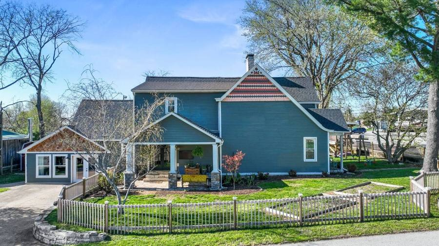

Home / The Bourbon Trail / Bourbon Trail Loft
ST. CLAIR STREET · FRANKFORT
Home / The Bourbon Trail / Bourbon Trail Loft
ST. CLAIR STREET · FRANKFORT
A renovated two-story loft with exposed brick and restored wood in Frankfort's St. Clair entertainment district. Walk to restaurants and live music; Buffalo Trace is 1.6 miles away and Woodford Reserve about 11.
Good to know: Second-floor unit with about 25 steps and no elevator.
St. Clair Street, Frankfort's entertainment district
For your privacy and ours, the exact address and arrival directions are sent after you book.
Self check-in. You get the building entry code and a personal code for the loft door before arrival.
Don't worry about stripping beds or doing dishes. Just turn off the lights and TVs, log out of streaming accounts and lock the door. Checkout is 10:00 am.
Yes. You get one free, signed parking space behind the building off Catfish Alley, and it fits a full-size truck.
Yes. The loft is on the second floor, about 25 steps up with no elevator, and the bedroom is upstairs inside the unit.
No pets, please.
Cancel at least 30 days before check-in for a full refund. Cancel 7 to 30 days before check-in and 50% of the nightly total is refunded. Cancellations less than 7 days before check-in are non-refundable.
“Very cool loft, loved all the old wood that had been restored. Located by the old capital buildings. Short walk to the riverside trail.”
“Shane was a super host and answered all our questions. The place is super clean and very nice. Location is perfect. Close walking distance to anywhere in downtown Frankfort. Highly recommend!”
MORE IN THE BOURBON TRAIL
 The Bourbon Trail
The Bourbon TrailDowntown Frankfort
1904 mansion · speakeasy · theater · sleeps 14
View home →
The Bourbon TrailVersailles
1903 home · covered patio · sleeps 8
View home → The Bourbon Trail
The Bourbon TrailSt. Clair Street · Frankfort
King loft for two · sleeps 2
View home →BOOK DIRECT PERK
Book on our site and get a complimentary early check-in or late checkout, up to 2 hours, when available. Same homes, same hosts, always a lower price than Airbnb or Vrbo.